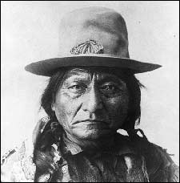
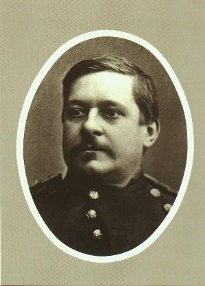
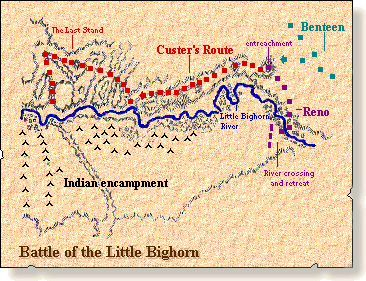
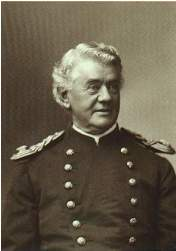
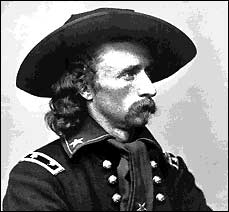

| Meanwhile down at the village the warriors were getting ready for battle and Sitting Bull had spent the whole night praying and had sacrificed a hundred pieces of flesh, fifty from each arm and Crazy Horse went to his daughter’s grave where he prayed and prayed. His daughter had died of cholera which was a disease brought from the white man and since then Crazy Horse wanted revenge for this. |
 |
| Sitting Bull |
| Somehow
Reno and his men made it down the bluff and crawled out of the forest without
being seen. Once they got within six feet of the first house they stoopped.
Some women men and children were playing outside while this was going
on and still they didn't see them. Then Reno raised his gun, aimed and
fired. This was the first shot of the Battle of the Little Bighorn. |
 |
| Major Marcus Reno |
| Within seconds the rest of his men fired. This caught the Indians totally off guard and many started to flee but recognizing the situation, Sitting Bull quickly got the men together and in no time they had formed a well enough unit to make a counter attack. Within ten minutes of the first shot Reno ordered his men to fall back and form a skirmish line but the Indians were coming out in huge numbers and eventually the skirmish line fell into a full blown retreat. Reno and what was left of his men ran for a about a mile where they ran into Benteen and his men which figured out the situation fast and quickly assembled the men and preparing for a fight. |  |
| The positions of Custer, Reno, and Benteen |
 |
While Reno and Benteen were shooting Custer had just found out how big the village was and waiting for Benteen and his men to come but they were helping Reno fight. After a while he decided to go down and fight the village. Along the way he had to Custer had to go down the bluffs then go across a river and down a ravine, which slowed them down a lot. By then an Indian scout had recognized Custer and his men so the Indians stopped going to Reno and Benteen, which took pressure off them. Custer got as far as the middle of the village when he was forced to retreat and back up to the ridge but this time Crazy Horse had arrived and had come up behind them making their escape was slim and none with Indians shooting guns and arrows while jumping out of hiding places and knocking men off their horses. Somehow Custer and some of his men made it past all this and were ready to retreat but Gall and his warriors had seen Custer and his men retreat and knew where he was going. At this point he turned to his remaining scouts and said “You have done what you agreed to do – brought us to the Sioux camp; now go back to the pack train and live” which some did but a few loyal scouts stayed to fight. By now the men were ordered to shoot their horses and stack the carcasses on top of each other to stop bullets and arrows, but it didn’t work with bullets and by now all the soldiers were dead. The fighting continued for a day with Benteen and Reno. By then Terry had arrived and when the Indians saw his force they fled. |
| Capt. Frederick Benteen |
| After the battle the men went to investigate about what happened to Custer and his men. They searched the scalped dead for a while then they found Custer with his scalp still on and not mutilated like all the others. The one thing that killed was a single arrow in the head. The aftermath of the war lead to the capture of Crazy Horse when he surrendered. He was bayoneted in the back by a soldier while resisting arrest and died. Sitting Bull fled to Canada to escape arrest and became a follower of the Ghost Dance. He was shot outside his home while being arrested by his own tribe. Benteen and Reno both stayed in the army and retired after a while. |
 |
| Gen. George Armstrong Custer |
| There has been alot of dispute about it too. For example, supposedly the Indians had better guns probably because they stole them from people the killed and if Custer would've stayed in one big colum they would've had a better chance of beating them but the chances are they still would've because it was 260 soldiers and about 2000 Indians. We treated the Indians not as well as we should've. A soldier memorial was up in the late 1870's to remember the soldiers who died but an Indian memorial was not put up until 1991. Last year we did a website about the Holocaust and there isn't much difference to the way the jews and Indians were treated. |
Chris Seele Rossville Junior High 2002 Plains Project Bibliography |